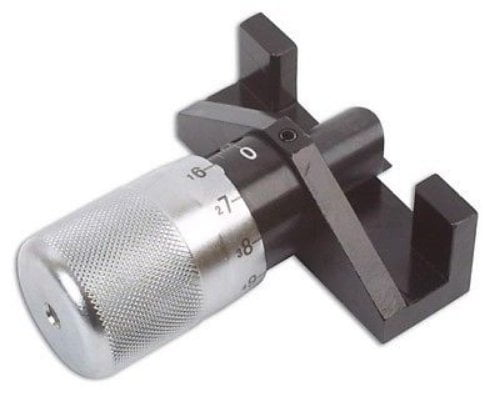

-
Well tension set. I ended up taking a pic before I took tensioner off. It ended back in the same spot.
Quick video of first start. Seems quiet to me.
https://youtu.be/JCdEEaaAkWM
-
No. Used the old pic and feel method. -
Hello z31p
It has 2 washers, IIRC. Normal compression one, and a flat one under that.Originally posted by JSM View Post
I ended up using the deflection and twisting methods though it seems like such an unscientific method (compared to say, torque when twisting the tensioner itself), but I've never broken a belt or had any issues.BLOZ UP.com
It is not recommended to confirm proper installation by driving into walls or other barriers as this could cause personal injury or damage to the vehicle. -
I just found this video on Youtube put out by Gates. I'm not entirely sure what VG30 or VG33 he is performing this timing belt replacement on, but he does a very good job of explaining components and what he is doing when replacing the timing belt and tensioner. Hope this helps someone.
https://www.youtube.com/watch?v=vd5y9teII9E1985 300ZX Z31 2+2 VG33ET (running!) -
Oil filter spins on block, so vg30 most likely. 33's are remote mounted (not sure if all are though).
Great video. That's a trick little tension tool, I can't seem to find anyone selling Gates' kit. They have one listed on Gates' site, but I don't see a product # to look it up by.
http://www.gates.com/products/automo…tension-tester
http://www.gatesunitta.com/timing-belt-tension-tester
Has anyone used this universal one?
 -
That's a VG30 with the square tooth gears. Good video. Cool tool. Except he seems to have the rockers (and his cam lock) engaged when he first tensions it and IIRC the FSM says to loosen all of them to relieve cam pressure against the belt.Originally posted by albionwanderer86 View PostLast edited by BLOZ UP; 05-16-2019, 09:02 PM.BLOZ UP.com
It is not recommended to confirm proper installation by driving into walls or other barriers as this could cause personal injury or damage to the vehicle.Comment

Copyright © 2006–. All rights reserved. Privacy Policy
Comment